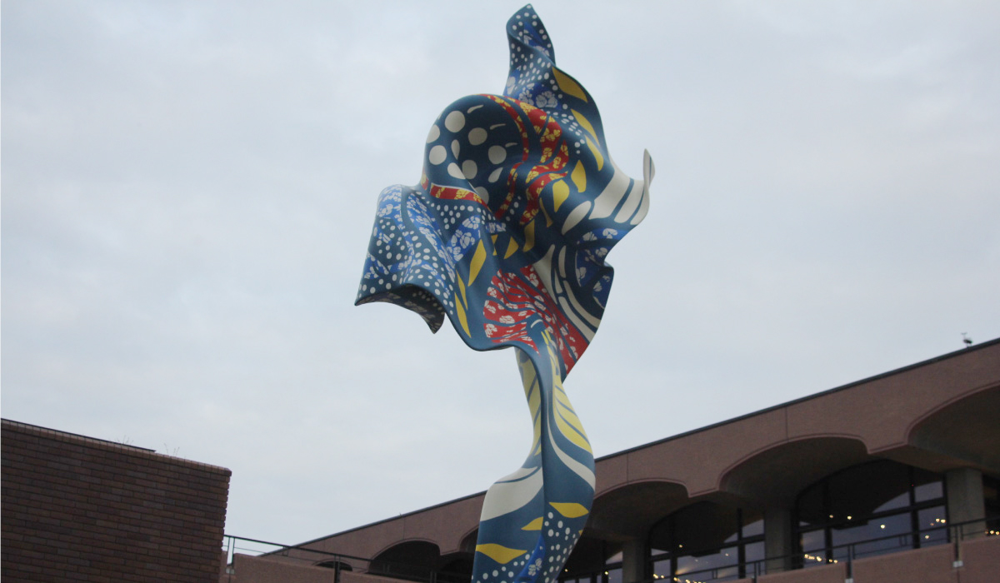
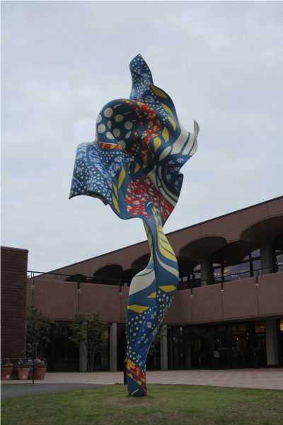
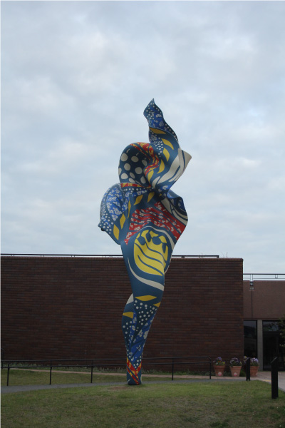
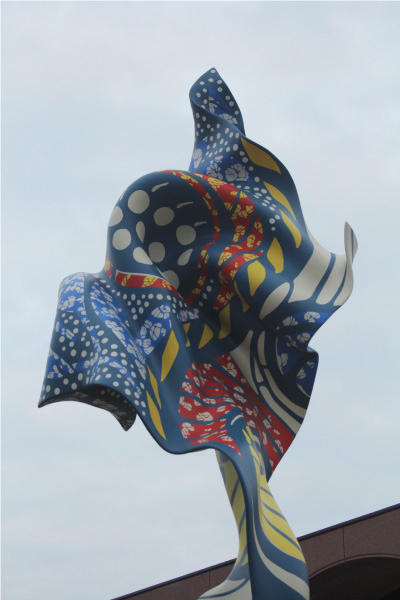
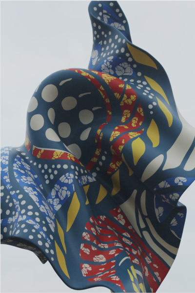

インカ・ショニバレCBE
   
ウインド・スカルプチャー(SG)Ⅱは2021年に設置された新しい作品である。作者はナイジェリア系
イギリス人で、ロンドン出身。３歳から17歳まではナイジェリアで過ごした。アーティスト名に付い
ている「CBE」は、大英帝国勲章の三等勲位（コマンダー）を意味する。作者は「アフリカン・プリ
ント」と呼ばれる布を用いて、作品を制作してきた。今作品は布が風を受け、複雑に波打つ様子が造
形されている。柄は、福岡市美術館が所蔵する日本製のアフリカン・プリント「植物模様スーパーワッ
クスプリント」からデザインが起こされた。作者が2013年頃より取り組んだ屋外大型彫刻で、見応え
がある作品だ。彼の作品は福岡市美術館が所蔵しており、常設展の展示室に展示されている。